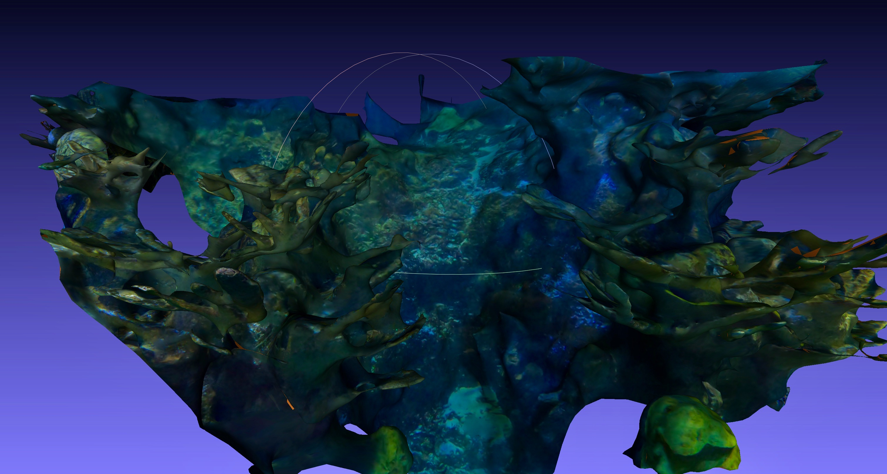
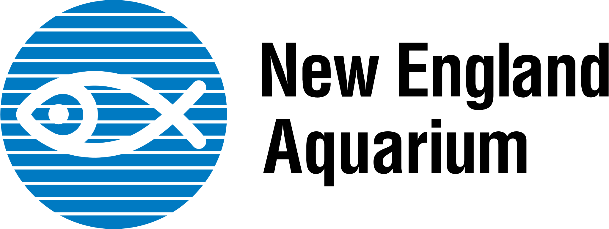

SeaDeep
Ensuring safe, reliable ocean research & development
by providing high fidelity 3D visualizations of
ocean bathymetry, man-made structures.

3D model of the New England Aquarium's 23feet Giant Ocean Tank

What Problem does SeaDeep solve?
Imagine you want to conduct sustainable research under the ocean. You are passionate about
not damaging the environment, and want to take all measures to ensure your research will do no
harm.
As a researcher, you confront the same problem all ocean researchers face,
you want to analyze an average offshore construction site 200ft under the ocean. Your problem,
you are committed to doing it sustainably, and you won't do something barbaric
like dredging the ocean bottom.
You are smart. You know there is an easy fix. Collect data remotely? Make
ocean maps.
Sadly though, now you face even more disappointment. Nothing exists,
Conventional ocean mapping doesn't cut it.
SeaDeep, a project out of Dr. Karen Panneta's lab: Vision and Sensing Systems Laboratory, Tufts University,
is led by a passionate team of Tufts Graduate Students (pictured right to left excluding divers),
Will Vinke, Eric Osherow, Shishir Rao, Alok Chand.
Deeply Passionate about saving the ocean, SeaDeep is commited to addressing the real problems faced as a result of poor ocean imaging.
Read more about SeaDeep at Tufts Gordon Institute